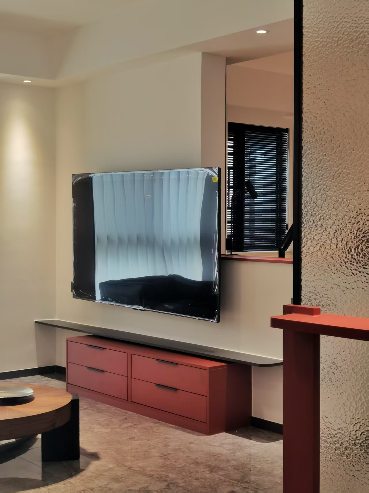
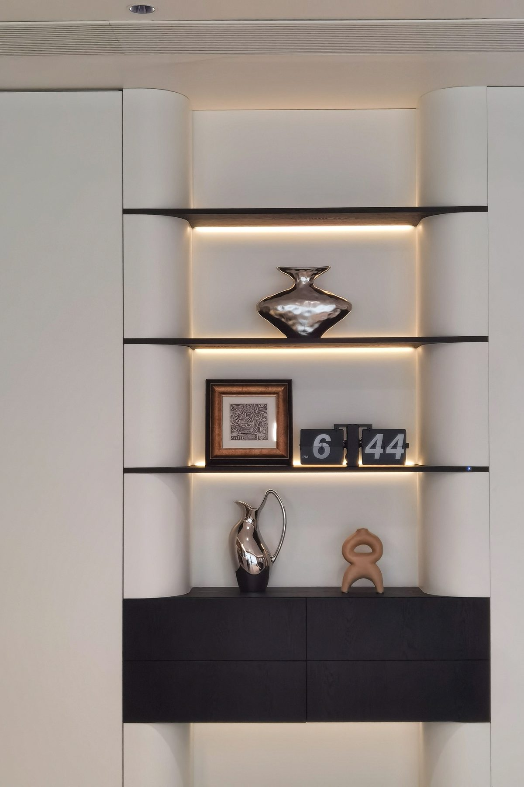
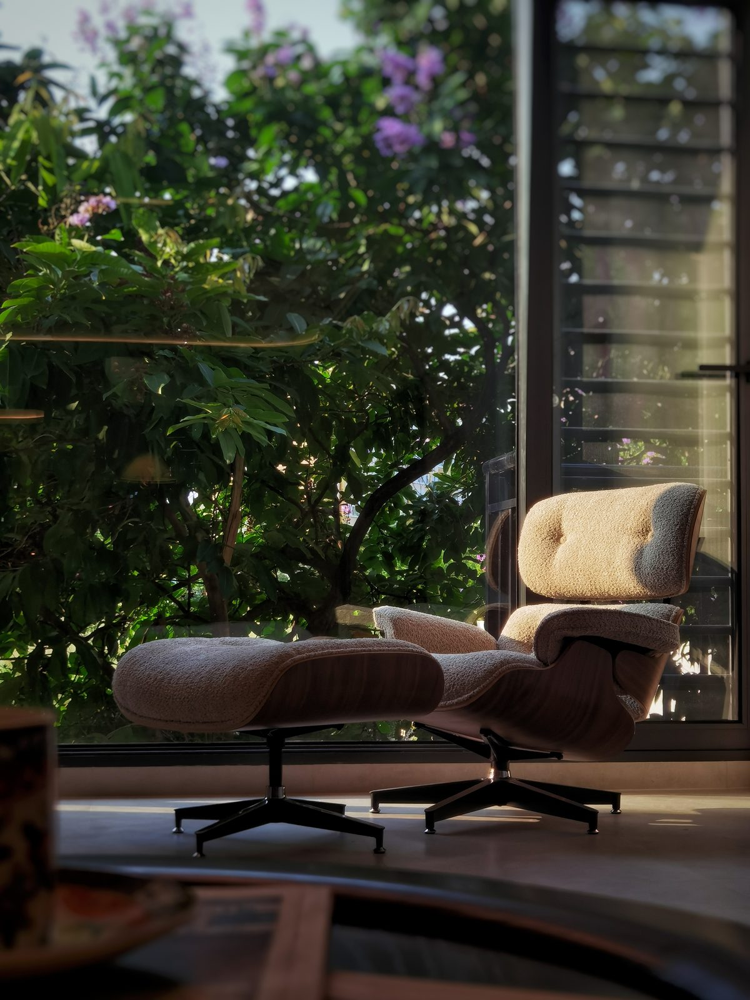

先说结论。这一套是南宁建发央玺的四房精装房，业主希望保留精装交付格局、不敲墙，但要把「住进去像样板间、不像自己家」的问题解决掉。落地内容含硬装微改、封窗防盗网、定制柜体、成品家具、窗帘和灯具六块。本页只公布结构比例，不公布具体金额——不同户型、不同品牌档位差异很大，结构比数字更有参考价值。其中定制木作占 28%、成品家具占 27%，钱主要花在「柜子」和「家具」这两块，这也是精装房软装最容易被低估的部分。

一、项目档案
二、钱花在哪：六个板块的结构比例
| 板块 | 占比 | 说明 |
|---|---|---|
| 定制木作 | 28.0% | 客厅柜体、主卧衣柜、厨房柜、过道柜、儿童房衣柜与床、洗衣机柜、洗手台镜柜 |
| 成品家具 | 26.7% | 沙发、餐桌 + 4 椅、两张书桌 + 人体工学椅、三张床与床垫、边几、儿童单人沙发 |
| 封窗 / 防盗网 | 19.1% | 大阳台推拉窗 + 纱网、三折叠隔断、次卧与客卫换窗、淋浴隔断、儿童房联动隔断、外机位防盗网 |
| 硬装 / 微改 | 16.4% | 拆墙与批灰修补、全屋 39 个电位重排、卫浴防水改造、阳台铺砖、局部吊顶、全房铲空鼓重刮腻子刷防霉漆 |
| 灯具 | 6.3% | 餐厅灯、客厅灯、磁吸轨道灯组、落地灯、壁灯、射灯、各房吸顶灯共 18 项（含安装） |
| 窗帘 | 3.5% | 阳台、主卧、老人房、儿童房、小房间全屋配套 |
一个反直觉的结构：窗帘只占 3.5%，灯具只占 6.3%，但这两项决定「晚上回家是什么感觉」。真正花钱的是看不见的地方——柜体尺寸和封窗规格，两项加起来占了 47%。所以预算紧的时候，不要从封窗和柜体上省。
三、每一块具体做了什么
1. 硬装微改：只改不能不改的
- 拆墙 12.5㎡（含材料人工与垃圾清运），拆完批灰修补；
- 全屋 39 个电位重新排布——精装房最大的痛点就是插座位置和家具对不上；
- 客卫由座便器改为蹲便器，含沉池防水、回填、安装（南宁家庭常见需求）；
- 全房铲除空鼓部位重刮腻子，刷多乐士无机矿物防霉抗菌内墙漆，阳台另刷外墙漆；
- 开工前全房贴地膜保护，拆改后与完工各清运一车。
2. 封窗与防盗网：南宁气候下不能省的一项
- 大阳台 120 系列六轨推拉窗，另加方通；
- 大阳台与卧室之间做三折叠隔断；儿童房用四联动隔断；
- 次卧、客卫换 90 三轨推拉窗并配纱网；主卫做淋浴隔断；
- 空调外机位做六厘实心烤漆防盗网。
封窗不只是隔音防雨——它直接决定窗帘方案。轨道位置、开启扇方向不确定就定窗帘，后面要么轨道被窗扇挡住，要么纱帘贴不到边。
3. 定制木作（占比最高的一块，28%）
- 客厅柜体、主卧衣柜、厨房柜、过道柜按现场尺寸定制；
- 儿童房：衣柜 + 床 + 梯柜 + 扶手（上下铺的安全与收纳一次做完）；
- 洗衣机柜、洗手台及镜柜；
- 南宁不少户型的梁位、管道位不一致，成品柜塞不进去——这是定制柜占大头的根本原因。
4. 成品家具与灯具：先定尺寸，再谈好看
家具清单是按房间逐个列的：客厅沙发与边几、餐厅餐桌 + 4 椅、两个书桌位（1.8 米和 1.2 米）、两张人体工学椅、三张床（1.2 / 1.5 / 定制 1.8）与对应床垫、儿童单人沙发。灯具 18 项含安装，其中客餐厅用磁吸轨道灯做基础照明、落地灯与壁灯做氛围层。

四、三个我们坚持的判断
- 先定封面三项，再买家具。墙面颜色、窗帘、灯光这三项不改，家具买回来一定配不上交付底色——这是精装房返工最多的地方。
- 柜体和封窗必须同期下单。两者都是 25~35 天生产周期，错开下单就是白白多等一个月。
- 把预算的一半以上留给「固定件」。柜体、封窗、五金这些拆不掉的东西，用十年；灯具窗帘这类随时能换的，反而可以后面再升级。这套房的结构正好印证了这一点。

五、常见问题
建发央玺这类四房精装房，预算怎么分配？
按这套的结构：定制木作 28%、成品家具 27%、封窗与防盗网 19%、硬装微改 16%、灯具 6%、窗帘 3.5%。如果只做纯软装搭配（不封窗、不做定制柜），结构会变成以家具和窗帘为主，同样面积下总投入会低不少。具体金额涉及业主信息，我们不公开；你可以拿户型图来，我们按这套的清单逻辑算你家那份。
精装房做软装要不要动硬装？
只动不能不改的：插座点位、空鼓墙面、防水排水相关的部分。除此之外不敲墙不动吊顶。
南宁回南天，材料怎么选？
窗帘避开绒面（易发霉），选棉麻混纺或高克重遮光布；柜体选多层实木或有防潮处理板材；阳台尽量封窗并给柜体留通风；涂料选防霉抗菌系列。
从签约到交付要多久？
方案确认约 10 个工作日，柜体与封窗生产 25~35 天，家具分两批进场，窗帘最后安装，整体约 60 天。